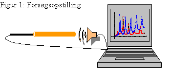
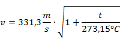
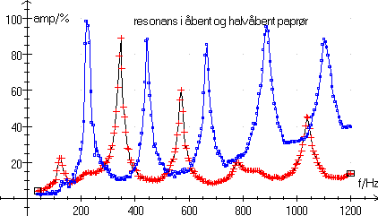
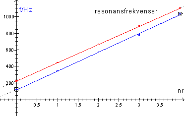
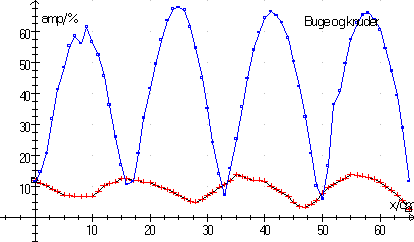
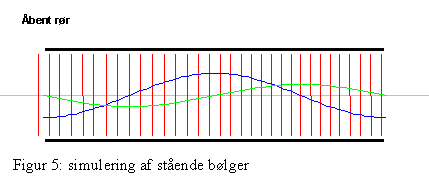
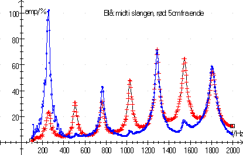
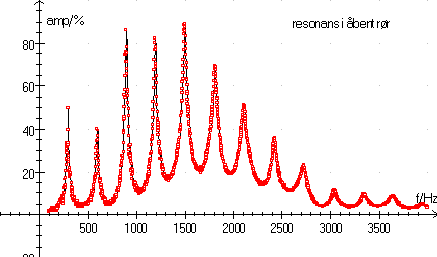
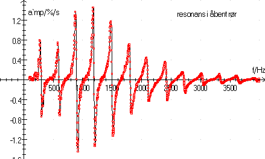
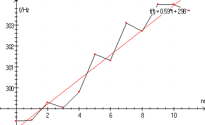

Pc med lydkort, højttaler og mikrofon, programmet Datalyse og et rør fx 1 meter langt. Røret bør være en gennemsigtig haveslange, men et paprør kan benyttes til de 2 første forsøg.
Afmonter pc’ens ene højttaler. Anbring rørets ene ende et par cm fra højttaleren og anbring mikrofonen 5-10 cm indenfor i den anden ende af røret. Se nøjere nedenfor. Start Datalyse og vælg apparat »Lydkort«. Vælg dernæst sweep i lydkortets menu. I denne menu vælges »Mål lyd« og i første forsøg kan man bruge default indstillinger for tid, frekvenser, osv.
Pc’ens lydkort skal være indstillet til at måle på mikrofonen og må ikke afspille lyd på mikrofonen, men må gerne afspille lyd på alle andre enheder.
Sweepet starter, når der tastes OK. Det er nok nødvendigt at indstille styrken på både mikrofon af højttaler. Amplituden ved frekvenstoppene må ikke overstige 100%. (overflow). Lydstyrken skal være lavere end du tror, så forsøget kræver ro i lokalet!
Mål rørets længde og diameter samt temperaturen i røret.
Indstil den øvre frekvens, så der fås ca. 5 toppe. Gem målingerne.
På de fleste mikrofoner kan man skrue hætten af, så man har en løs mikrofon i en ledning. Anbring mikrofonen så tæt på den lukkede ende som muligt. Mikrofonen må godt puttes ind gennem den åben ende. Gentag sweepet.
Gentag eventuelt forsøget med et rør af en anden længde eller diameter.
Opgave:
Udregn frekvenser for grundtone og de 4 første overtoner for et åbent rør. Afsæt frekvenserne på en talakse. Foretag samme udregning for et halvåbent rør og afsæt frekvenserne på samme talakse. Hvad er afstanden mellem to på hinanden følgende frekvenser?
Lav en tegning, som viser lydsvingningerne i røret for grundtonen og første overtone for både det åbne rør og det halvåbne rør.
Forklar udseendet af de målte sweep og sæt graferne ind i rapporten.
For begge forsøg måles frekvensen ved toppene, f0, f1, f2, f3,…, benyt fx funktionen maksimum i Datalyse eller bedre differentier og find nulpunkt. Frekvenserne afbildes som funktion af nummeret 0,1,.... Lav gerne begge afbildninger (åbent og lukket rør) i samme koordinatsystem. Bestem hældningen af den/de lineære funktion(er) vha. lineær regression. Sæt grafen ind i rapporten.
Det stykke, d, som lydbølgens bug ligger uden for rørets åbne ende, kaldes mundingsusikkerheden. Man kan med god tilnærmelse sætte mundingsusikkerheden lig rørets radius.
Gør rede for, at lydhastigheden v i det åbne rør kan beregnes vha.
(1) v = 2(l + 2d)·a,
Hvor l er rørets længde, d er mundingsusikkerheden, og a er frekvensgrafens hældning.
Beregn lydhastigheden i både det åbne og det halvåbne rør.
Sammenlign den fundne lydhastighed med den teoretiske lydhastighed.
(2)


Figur 2: resonansfrekvenser
Den blå graf viser resonans i et åbent rør og den røde kurve resonans i halvlukket rør.
Temperatur: 23 °C, diameter: 5,0 cm åben rørlængde 73,5 cm og lukket rørlængde 72,5 cm. I det halvlukkede rør er mikrofonen anbragt ca. 1 cm fra den lukkede ende. I det halvlukkede rør er mikrofonen anbragt ca. 1 cm fra den lukkede ende. Det kan på grund af lydkortets følsomhed være vanskeligt at måle den første frekvens i det halvåbne rør.
Afbildning af resonanstoppe:

Figur 3: resonanser som funktion af nummer
Frekvenserne er bestemt ved i Datalyse at afmærke hver top og vælge maksimum-funktionen.
Benyt en plasticslange eller et glasrør, så man kan se mikrofonen inde i røret. Røret skal være forsynet med mærker eller påklæbet et målebånd. I Datalyse vælges lydkort og måling af amplitude.
Vi forudsætter, at resonanserne er udmålt, som beskrevet i forsøg 1. Sæt frekvensen til en resonansfrekvens fx 3. overtone og indstil tid pr. måling til 2 sekunder (eller lidt længere). Benyt dig samtidig af, at du kan få skaleret x-aksen i cm og vælg endelig pc’en som lydgiver.
Skil mikrofonen ad, så du har en ledning med en ærtestor mikrofon. Anbring mikrofonen i røret nærmest højttaleren. Start måling og træk mikrofonen fra mærke til mærke efter hver lydpuls fra pc’en. Husk, at notere frekvensen!
Gentag forsøget, idet du denne gang vælger en frekvens mellem to resonanstoppe.
For forsøget ved resonansfrekvensen udmåles afstanden mellem maksima. Benyt et gennemsnit af disse afstande til at udregne bølgelængden og hermed lydens hastighed i røret. Sammenlign med resultatet fra første forsøg.
Giv en fortolkning af de to grafer. Lav herunder en tegning af røret og afmærk buge og knuder. Mikrofonen måler tryk!

Figur 4: placering af buge og knuder
Programmet »Regnbuen« kan simulere stående bølger. Nedenstående billede stammer fra programmet »Regnbuen«. Den blå kurve viser udsving, og den grønne kurve viser ændring i tryk. Afprøv selv simulationen både for åbne rør, lukkede rør og halvåbne rør.

Anbring mikrofonen nøjagtigt midt i røret og foretag et sweep, som i første forsøg. Forklar grafen. Den skulle gerne se ud nogenlunde, som vist herunder.

Følgende målinger er foretages med et rør i form af en bøjlestang til en klædeskab. Længde 55,15 cm, temperatur 20,4°C, indre diameter 2,2 cm.

Resonansfrekvenserne bestemmes ved først at differentiere med kraftig udglatning:

Herefter markeres de lodrette stykker af grafen (et par punkter til hver side, det kan være nødvendigt, at zoome ind) og der klikkes på nulpunkt i panelet til venstre. Herved fås en temmelig nøjagtig bestemmelse af resonansfrekvenserne. Datalyse skriver resultaterne i memoen. Divideres den første frekvens med 1, den anden med 2 osv., kan følgende graf tegnes:

Denne graf viser, at mundingsusikkerheden er frekvensafhængig. Man kan vel også forvente, at mundingsusikkerheden bliver mindre, når bølgelængden bliver mindre. Prøv selv at udregne mundingsusikkerheden ved første overtone, ved 10. overtone. Benyt formel (2) til beregning af lydhastigheden.
Se også forsøg med heksehyl